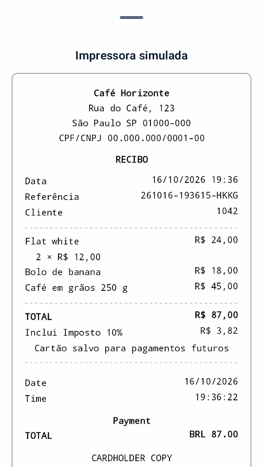
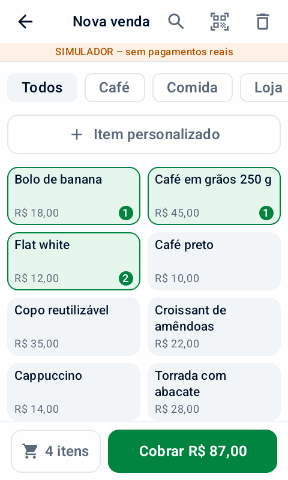
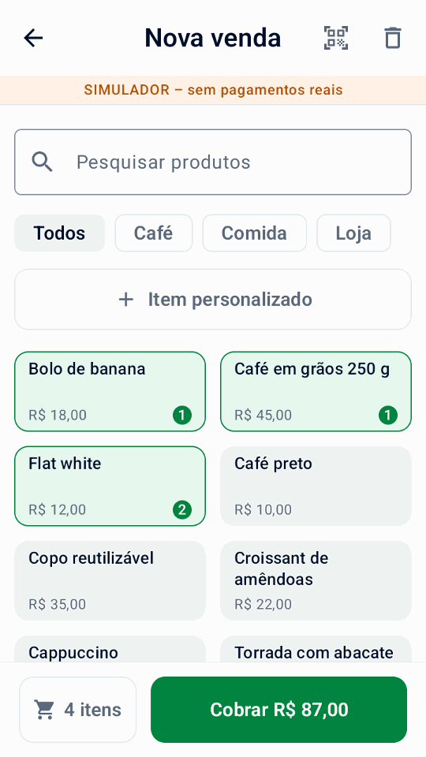
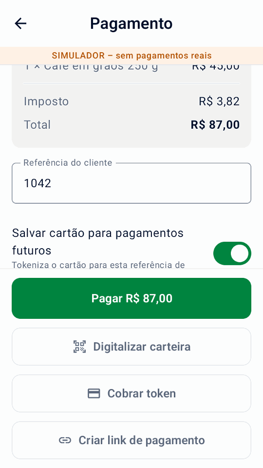
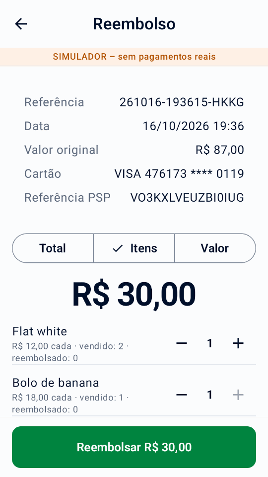
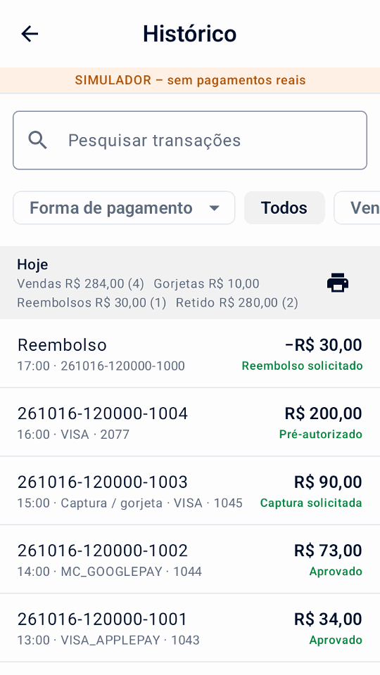
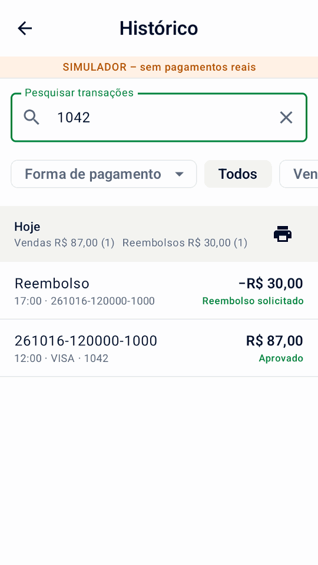
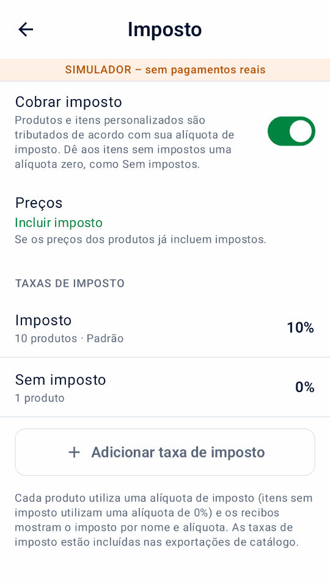
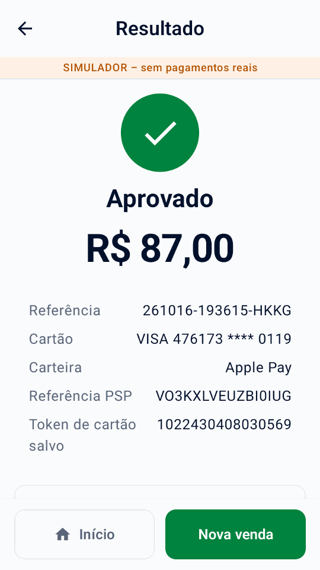

Início rápido
Verifique os pré-requisitos, instale, conecte-se à Adyen e teste.
Gratuito e de código aberto · roda em terminais Adyen Android
O Mini mPOS roda diretamente nos terminais Android da Adyen: selecione produtos, receba pagamentos, imprima ou envie recibos por e-mail e faça reembolsos escaneando o recibo. Tudo em um só dispositivo, sem caixa separado, tablet ou assinatura do aplicativo. Prefere usar um tablet ou celular? Ele também funciona com seu terminal de pagamento ou com Tap to Pay.


Verifique os pré-requisitos, instale, conecte-se à Adyen e teste.
Receber pagamentos, reembolsar, entregar recibos e fechar o dia.
Corrigir resultados desconhecidos, recusas, emparelhamento, problemas de rede e impressora.
De um balcão para vários dispositivos em lojas, eventos, entregas e chamadas de serviço: produtos, pagamentos, recebimentos e reembolsos, sem back office para operar.
Os terminais suportados também oferecem pagamentos parciais, avisos do comprador, doações e digitação manual do cartão. Verifique Capacidades da Adyen para sua configuração e compare a atividade local com totais terminais.
Manter uma lista de produtos com preços, categorias, códigos de barras e impostos. Pesquise, filtre, leia um código de barras ou digite um valor personalizado.
Aceite pagamentos com cartão e carteira com Adyen no próprio terminal, ou a partir de um tablet ou telefone com terminal ou Tap to Pay.
Imprima um recibo completo com os dados da sua empresa e um código de reembolso QR, envie-o por e-mail ou compartilhe-o em um tablet ou telefone.
Em vez disso, envie um link de pagamento: o cliente escaneia seu código QR ou o abre em um e-mail e paga na página de pagamento da Adyen.
Digitalize o código QR no recibo e, em seguida, reembolse tudo, alguns itens ou uma quantia. Sempre vinculado ao pagamento original.
Manter um depósito para uma reserva ou aluguel. Receba o pagamento mais tarde, ajuste o valor ou libere a retenção.
Em um terminal compatível, permita que os compradores escolham uma gorjeta antes de pagar ou escrevam uma em um recibo impresso para capturar mais tarde.
Coletar uma gorjeta terminal · Coletar uma gorjeta de recibo
Defina suas próprias taxas de imposto, inclua o imposto nos preços ou adicione-o na finalização da compra. Escolha qualquer moeda suportada pela Adyen.
Proteger a configuração com um PIN de administrador e ações de acompanhamento financeiro com um PIN de gerente separado. As senhas e chaves permanecem criptografadas.

Toque em produtos ou digite um valor.

Adicione uma referência e, com consentimento, salve o cartão.
Um boleto com tudo, mais um código QR.

Digitalize o recibo e escolha o que reembolsar.


Veja os totais diários e encontre vendas, reembolsos e depósitos com apenas alguns toques.
Instalado no terminal, o Mini mPOS não precisa de nenhum outro hardware e nenhum back-end para funcionar. Em um tablet ou telefone, funciona com seus terminais ou Tap to Pay.


Explore o simulador integrado em um telefone ou emulador Android, sem terminal de pagamento.
Baixe o aplicativo, coloque-o em seus terminais através de seu Adyen Customer Area (ou instale-o em um tablet ou telefone) e digitalize suas chaves no assistente de configuração. Nosso guia orienta você.
Leia o início rápido · Abra o auxiliar de configuração · Baixe o aplicativo
Execute diretamente em um terminal Adyen Android para uma verificação completa ou use um tablet ou telefone Android com um terminal de rede, terminal de nuvem ou Tap to Pay. Veja requisitos e opções de configuração. A impressão precisa de uma impressora; a digitalização precisa de uma câmera.
O aplicativo é gratuito e de código aberto sob a licença MIT. As taxas de processamento de pagamentos da Adyen ainda se aplicam.
Não. Mini mPOS não é fabricado, endossado ou apoiado pela Adyen. Teste sua configuração no ambiente TEST da Adyen antes de entrar no ar. Veja onde obter ajuda para perguntas sobre aplicativos e Adyen.
Não. Produtos, configurações e histórico permanecem em cada dispositivo. QR transfere produtos de cópia e configuração, não histórico de pagamentos ou alterações contínuas. Veja dispositivos e dados.
Nenhum servidor, mas toda configuração de pagamento real precisa de credenciais Checkout API. Outras chaves dependem de para onde vão os pagamentos. Eles são criptografados no dispositivo, uma compensação em relação à recomendação do lado do servidor da Adyen. Siga configuração de conexão e a orientação de segurança lá.